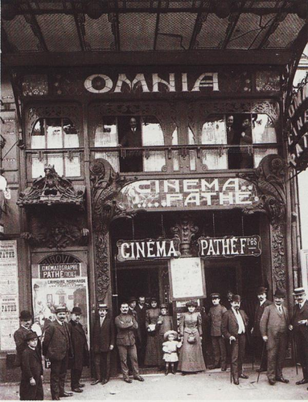
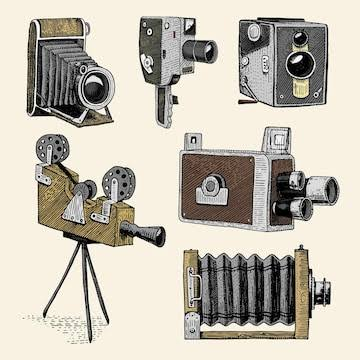
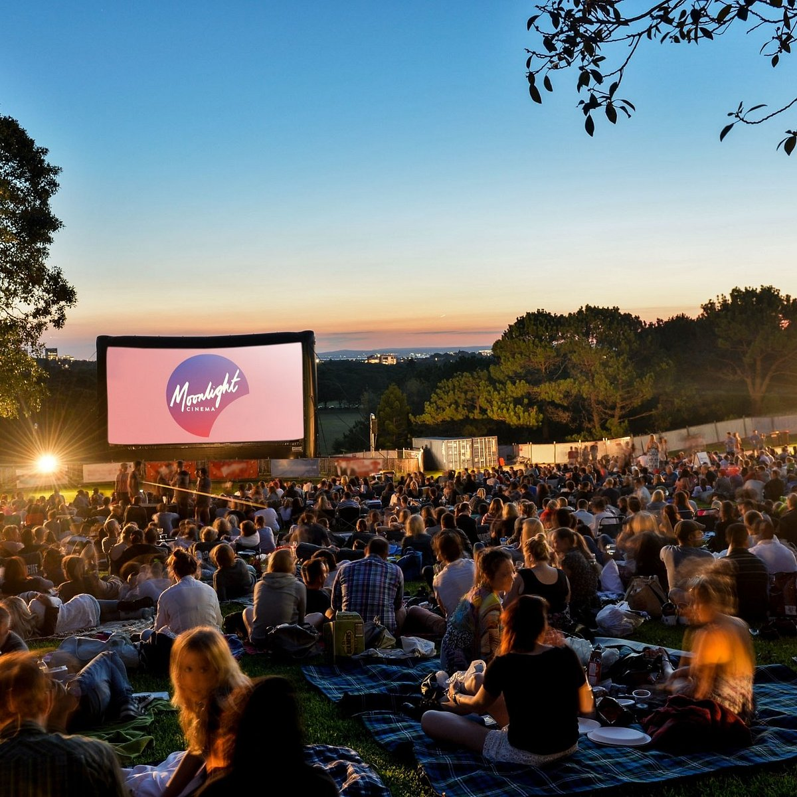

A mozi története
Kezdetek
A mozi a 19. század végi optikai és fotókémiai kutatások eredményeként jött létre. A Lumière testvérek 1895-ös kinematográfja a szem vizuális tehetetlenségét kihasználva hozott létre mozgásillúziót állóképekből. Ez az optikai-mechanikai áttörés fektette le a filmművészet és a vizuális tömegkommunikáció alapjait.

A mozi evolúciója
A mozi a néma, fekete-fehér mozgóképekkel indult a 19. század végén, majd idővel megjelent a hang és a színes film. Napjainkra a feltekert filmcsíkokat teljesen felváltották a digitális kamerák, a számítógépes látványelemek és a modern lézeres vetítők.

Szórakoztatás és üzlet
A streaming térnyerése miatt a mozik már nem a filmek kizárólagosságára, hanem az otthon leutánozhatatlan látványélményre és a büfébevételekre építik a működésüket. A színházak és operettek élő, közösségi varázsával a legmodernebb technológia és az élő színházi közvetítések segítségével tartják a lépést. A piaci kihívások hatására a mozi a puszta filmforgalmazás helyszínéből egy technológiailag fejlett, élményalapú szolgáltatássá fejlődött.

Helyi mozilehetőségek
Zilahon a Cinema Scala biztosítja a helyi mozis élményt, ahol a legújabb 2D-s és 3D-s premierfilmeket vetítik modern, felújított környezetben. Az épületkomplexum különlegessége a digitális planetárium, amely csillagászati és ismeretterjesztő előadásokkal egészíti ki a kínálatot. A nyári hónapokban a városszerte szervezett szabadtéri vetítések teszik még színesebbé a helyi filmkultúrát.